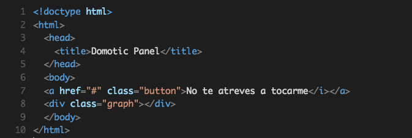
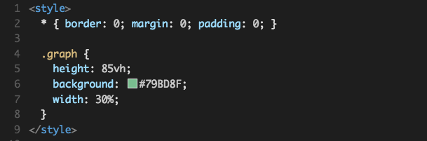
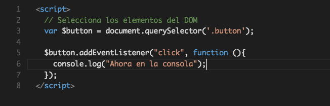

Jugando con el internet y sus cosas
UAA Flisol 2015
por Iddar Olivares / @iddar
Descarga el codigo de la practia desde aquí
Internet de la cosas


Temario
- El hardware
- La web
- La magia
El hardware
- Blink
- Datos analogos
- Comunicación serial
La web
- Estructura
- Color
- Vida
La magia
- nodejs
- npm
- socket.io
hardware
Arduino
Lo basico
void setup() {
// Toda los datos que se requiren
// para configurar la placa
}
void loop() {
// Logica y procesos
}
Blink
void setup() {
pinMode(13, OUTPUT);
}
void loop() {
digitalWrite(13, HIGH);
delay(1000);
digitalWrite(13, LOW);
delay(1000);
}
Lectura analoga
void setup() {
// Las lecturas analogos no requeren ser inicializadas
}
void loop() {
int valorDelSensor = analogRead(A2);
}
Comunicación serial
void setup() {
Serial.begin(9600);
}
void loop() {
Serial.print("Mira mama arduino habla");
}
La web
HTML, CSS, JavaScript
La estructura
El color
La vida
La Magia
Node.js + Socket.io
NodeJS
console.log("Ahora en el servidor")
NPM
{ "name": "Test-Socket.io", "version": "0.0.1", "description": "my first socket.io app", "dependencies": { "express": "4.9.5", "serialport": "1.4.6", "socket.io": "1.1.0" } }
express
var express = require('express');
var app = express();
var http = require('http').Server(app);
var WEBPORT = 3000;
function getRootCallback(req, res){
res.sendfile('index.html');
}
app.get('/', getRootCallback);
http.listen(WEBPORT, function serverStart() {
console.log(WEBPORT);
});
Socket.io
var express = require('express');
var app = express();
var http = require('http').Server(app);
var io = require('socket.io')(http);
io.on('connection', function onConnection(socket) {
console.log('Se a conectado un usuario :)');
// Event onDisconnect
socket.on('disconnect', function onDisconnect() {
console.log('El usuario se desconecto :(');
});
});
Node Serial
var serialport = require("serialport");
var SerialPort = serialport.SerialPort;
var SERIALPORT = '/dev/tty.usbserial-A9007WoZ';
var SerialPort = new SerialPort(SERIALPORT, {
baudrate: 9600,
parser: serialport.parsers.readline("\n")
});
function onDataCallback (serialLine){
var data = JSON.parse(serialLine.toString());
console.log(data.sensor);
}
SerialPort.on('data', onDataCallback);
Gracias
http://github.com/iddar/slides
Descarga el codigo de la practia desde aquí